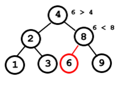
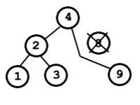
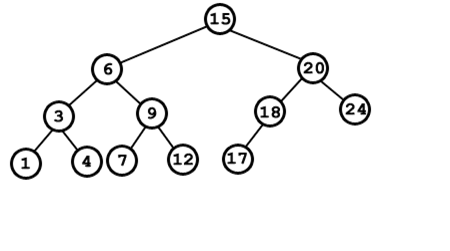
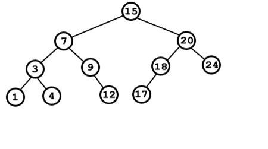

BUSCAR
Buscar Es una de las operaciones más importantes de esta estructura. Debido a la propiedad de los árboles binarios de búsqueda, si el valor buscado no es igual al de nodo actual, sólo existen dos posibilidades: que sea mayor o que sea menor. Lo que implica que el nodo buscado puede pertenecer a uno de los dos subárboles. Cada vez que se toma la decisión de buscar en uno de los subárboles de un nodo, se están descartando los nodos del otro subárbol. En caso de árboles balanceados, se descarta la mitad de los elementos de la estructura, esto cumple el modelo: T(n) = T(n/2) +c, lo cual asegura costo logarítmico.
pnodo BuscarIterativo( pnodo t, int valor) {
while ( t != NULL){
if ( t->clave == valor ) return (t);
else {
if (t->clave < valor ) t = t->right; //desciende por la derecha
else t = t->left; //desciende por la izquierda
}
} return (t); /* NULL No lo encontró*/ }
Es preciso tener implementados los operadores de igualdad y menor que, en caso de que éstos no existan en el lenguaje, para el tipo de datos de la clave. Por ejemplo si la clave es alfanumérica (un string), una estructura, etc.
INSERCIÓN
El procedimiento de inserción en un árbol binario de búsqueda es muy sencillo, únicamente hay que tener cuidado de no romper la estructura ni el orden del árbol.
Cuando se inserta un nuevo nodo en el árbol hay que tener en cuenta que cada nodo no puede tener más de dos hijos, por esta razón si un nodo ya tiene 2 hijos, el nuevo nodo nunca se podrá insertar como su hijo. Con esta restricción nos aseguramos mantener la estructura del árbol, pero aún nos falta mantener el orden.
Para localizar el lugar adecuado del árbol donde insertar el nuevo nodo se realizan comparaciones entre los nodos del árbol y el elemento a insertar. El primer nodo que se compara es la raíz, si el nuevo nodo es menor que la raíz, la búsqueda prosigue por el nodo izquierdo de éste. Si el nuevo nodo fuese mayor, la búsqueda seguiría por el hijo derecho de la raíz.
Este procedimiento es recursivo, y su condición de parada es llegar a un nodo que no tenga hijo en la rama por la que la búsqueda debería seguir. En este caso el nuevo nodo se inserta en ese hueco, como su nuevo hijo.
Vamos a verlo con un ejemplo sobre el siguiente árbol:

Se quiere insertar el elemento 6.
Lo primero es comparar el nuevo elemento con la raíz. Como 6 > 4, entonces la búsqueda prosigue por el lado derecho. Ahora el nuevo nodo se compara con el elemento 8. En este caso 6 < 8, por lo que hay que continuar la búsqueda por la rama izquierda. Como la rama izquierda de 8 no tiene ningún nodo, se cumple la condición de parada de la recursividad y se inserta en ese lugar el nuevo nodo.

ELIMINACIÓN
El borrado en árboles binarios de búsqueda es otra operación bastante sencilla excepto en un caso. Vamos a ir estudiando los distintos casos.
Tras realizar la búsqueda del nodo a eliminar observamos que el nodo no tiene hijos. Este es el caso más sencillo, únicamente habrá que borrar el elemento y ya habremos concuído la operación.
Si tras realizar la búsqueda nos encontramos con que tiene un sólo hijo. Este caso también es sencillo, para borrar el nodo deseado, hacemos una especie de puente, el padre del nodo a borrar pasa a apuntar al hijo del nodo borrado.

Por último, el caso más complejo, si el nodo a borrar tiene dos hijos. En este caso se debe sustitui el nodo a borrar por mayor de los nodos menores del nodo borrado, o por el menor de los nodos mayores de dicho nodo. Una vez realizada esta sustitución se borrra el nodo que sustituyó al nodo eliminado (operación sencilla ya que este nodo tendrá un hijo a lo sumo).
Sobre el siguiente árbol queremos eliminar el elemento 6. Tenemos dos opciones para sustituirlo:
El menor de sus mayores: 7.
El mayor de sus menores: 4.

Vamos a sustituirlo por el 7 (por ejemplo). El árbol resultante sería el siguiente, tras eliminar también el elemento 7 de su ubicación original.
